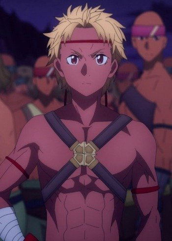

|  |
Iskahn |
- Sword Art Online: Alicization - War of Underworld
- Sword Art Online: Alicization - War of Underworld: Part II
|
Iskahn is the Ten Champion and the leader of Puglists Guild, member of the Ten Lords Assembly under control of Dark Territory. He is a man who cared about his body, uninterested in anyone else strengthen. He greatly cares about the pride of his guild as warriors. He believes that a ruler takes responsibility for those they commanded. He loathed when his fellow Puglists died in vain. He also believes that it is the duty to care for the lives of this subject. |